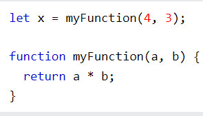
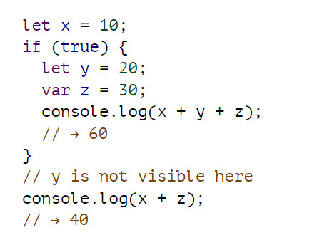
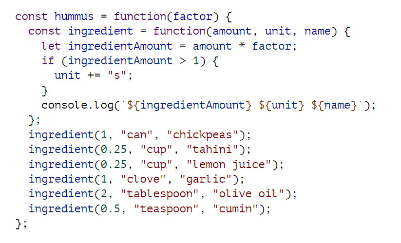
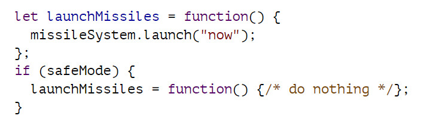
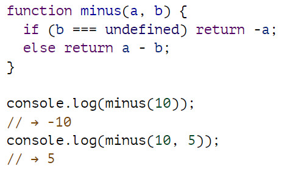

Hàm JavaScript là một khối mã được thiết kế để thực hiện một tác vụ cụ thể.
Một hàm JavaScript được thực thi khi "cái gì đó" gọi nó (calls it).
Hàm JavaScript được xác định bằng từ khóa hàm, theo sau là tên, tiếp theo là dấu ngoặc đơn ().
Tên hàm có thể chứa các chữ cái, chữ số, dấu gạch dưới và ký hiệu đô la (quy tắc giống như biến).
Dấu ngoặc đơn có thể bao gồm các tên tham số được phân tách bằng dấu phẩy: (tham số1, tham số2, ...)
Mã được thực thi bởi hàm, được đặt bên trong dấu ngoặc nhọn: {}
Các tham số của hàm được liệt kê bên trong dấu ngoặc đơn () trong định nghĩa hàm.
Các đối số của hàm là các giá trị mà hàm nhận được khi nó được gọi.
Bên trong hàm, các đối số (các tham số) hoạt động như các biến cục bộ.
Mã bên trong hàm sẽ thực thi khi "cái gì đó" gọi (gọi) hàm:
Khi JavaScript đạt đến câu lệnh trả về, hàm sẽ ngừng thực thi.
Nếu hàm được gọi từ một câu lệnh, JavaScript sẽ "quay lại" để thực thi mã sau câu lệnh gọi.
Các hàm thường tính toán một giá trị trả về. Giá trị trả về được "trả lại" cho "người gọi":
Mỗi ràng buộc có một phạm vi, đó là một phần của chương trình trong đó ràng buộc được hiển thị. Đối với các liên kết được xác định bên ngoài bất kỳ hàm hoặc khối nào, phạm vi là toàn bộ chương trình—bạn có thể tham khảo các liên kết đó ở bất cứ đâu bạn muốn. Chúng được gọi là toàn cầu.
Nhưng các ràng buộc được tạo cho các tham số hàm hoặc được khai báo bên trong một hàm chỉ có thể được tham chiếu trong hàm đó, vì vậy chúng được gọi là các ràng buộc cục bộ. Mỗi khi hàm được gọi, các phiên bản mới của các liên kết này được tạo. Điều này cung cấp một số cách ly giữa các chức năng—mỗi lệnh gọi chức năng hoạt động trong thế giới nhỏ bé của riêng nó (môi trường cục bộ của nó) và thường có thể hiểu được mà không cần biết nhiều về những gì đang diễn ra trong môi trường toàn cầu.
Các liên kết được khai báo bằng let và const trên thực tế là cục bộ của khối mà chúng được khai báo, vì vậy nếu bạn tạo một trong các liên kết đó bên trong một vòng lặp, mã trước và sau vòng lặp không thể “nhìn thấy” nó.
JavaScript không chỉ phân biệt các ràng buộc toàn cầu và cục bộ. Các khối và chức năng có thể được tạo bên trong các khối và chức năng khác, tạo ra nhiều mức độ địa phương.
Mã bên trong hàm thành phần có thể thấy ràng buộc yếu tố từ hàm bên ngoài. Nhưng các ràng buộc cục bộ của nó, chẳng hạn như đơn vị hoặc số lượng thành phần, không hiển thị trong hàm bên ngoài.
Tập hợp các ràng buộc hiển thị bên trong một khối được xác định bởi vị trí của khối đó trong văn bản chương trình. Mỗi phạm vi cục bộ cũng có thể nhìn thấy tất cả các phạm vi cục bộ chứa nó và tất cả các phạm vi có thể nhìn thấy phạm vi toàn cầu.
Một ràng buộc chức năng thường chỉ hoạt động như một tên cho một phần cụ thể của chương trình. Một ràng buộc như vậy được xác định một lần và không bao giờ thay đổi.
Một giá trị hàm có thể làm tất cả những việc mà các giá trị khác có thể làm—bạn có thể sử dụng nó trong các biểu thức tùy ý, không chỉ gọi nó. Có thể lưu trữ một giá trị hàm trong một ràng buộc mới, chuyển nó làm đối số cho một hàm, v.v.
Đây là một khai báo chức năng. Câu lệnh xác định hình vuông ràng buộc và trỏ nó vào hàm đã cho. Nó dễ viết hơn một chút và không yêu cầu dấu chấm phẩy sau hàm.
JavaScript cực kỳ rộng rãi về số lượng đối số bạn chuyển đến một hàm. Nếu bạn vượt quá nhiều, những cái thừa sẽ bị bỏ qua. Nếu bạn chuyển quá ít, các tham số bị thiếu sẽ được gán giá trị không xác định.
hành vi này có thể được sử dụng để cho phép một hàm được gọi với số lượng đối số khác nhau.
